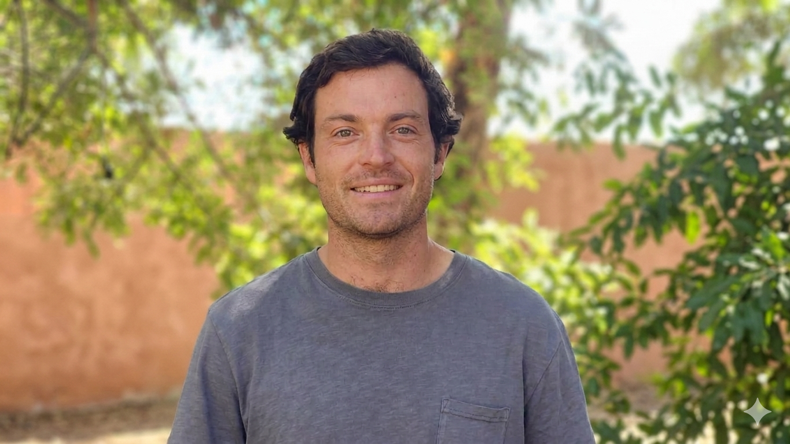

Combino estrategia de negocio y ejecución técnica: diagnostico dónde está la oportunidad de crecer o mejorar y la implemento end-to-end mediante el uso de automatización, IA y datos.
Durante 3 años fui Controller en Agroberries, empresa líder global en frutos rojos. No solo gestioné el control financiero, también construí sistemas y herramientas para optimizar procesos y tomar mejores decisiones: pipelines ETL, modelos de margen, automatización del cierre mensual y dashboards para directorio.
Junto con mi equipo, logramos triplicar el EBITDA de Chile. Mi rol fue central en la optimización de operaciones y los sistemas de información que lo hicieron posible.
Hoy combino esa base de negocio con capacidad técnica real: construyo agentes IA, aplicaciones web y sistemas de automatización end-to-end con impacto medible.
Trabajo de manera independiente con empresas que quieren pasar de detectar oportunidades a ejecutarlas con tecnología.
No solo construyo: diagnostico la oportunidad de negocio, diseño la estrategia y la ejecuto con tecnología.
Proyectos end-to-end: desde la lógica de negocio hasta el código en producción.
Agroberries
Sistema modular para automatizar el cierre financiero mensual: asignación de costos, provisiones, liquidaciones y reconciliaciones.
Sistema de decisión para optimizar la asignación de cosecha según márgenes unitarios: análisis de break-even entre mercados (Fresh vs IQF).
Sistema liviano que automatiza pedidos y seguimiento de pagos para una pequeña empresa: el cliente pide por Google Form, recibe un email con el resumen y el link de pago, y el sistema concilia los pagos de MercadoPago cada 4 horas, actualizando el estado de cada pedido.
Plataforma AI full-stack con soporte multi-proveedor (Anthropic, OpenAI, Google, Moonshot Kimi), auth, historial de conversaciones, comparación de modelos en paralelo y tracking de costos por proveedor.
Plataforma de inteligencia de mercado para el sector fruticultor chileno. Reconstrucción de series de tiempo de superficie plantada (2000–2024) combinando datos CIREN/ODEPA con clasificador supervisado sobre imágenes satelitales.
Detecta enfermedades en plantas de café a partir de una foto. Interfaz simple, resultado inmediato - Diseñada para que cualquier productor pueda usarla desde el campo.
Convierte grabaciones de reuniones en insights de negocio estructurados y exportados a Google Sheets, sin intervención manual.
Base de negocio y sistemas de la ingeniería, capacidad técnica del data science.
Trabajo con empresas y emprendedores que quieren crecer usando estrategia, datos y tecnología.
Cuéntame tu objetivo y diagnostiquemos juntos dónde está la oportunidad.